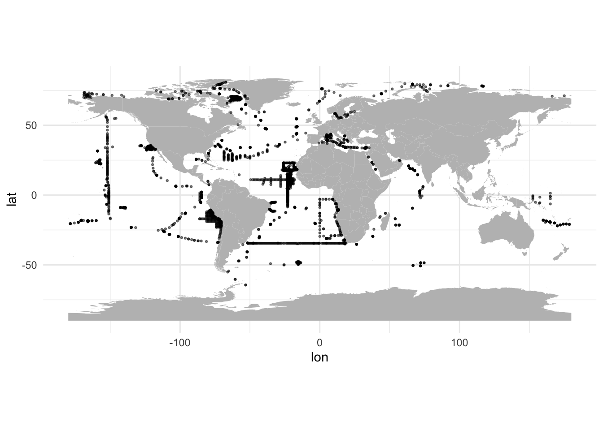
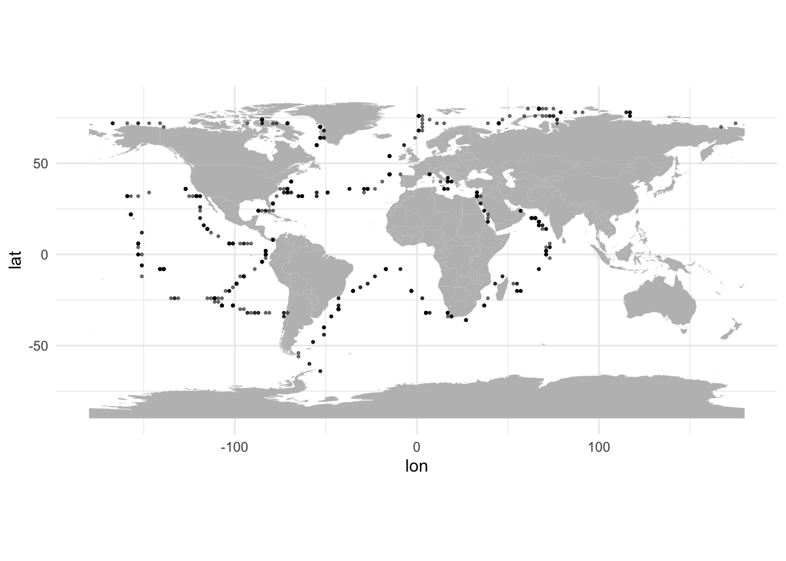
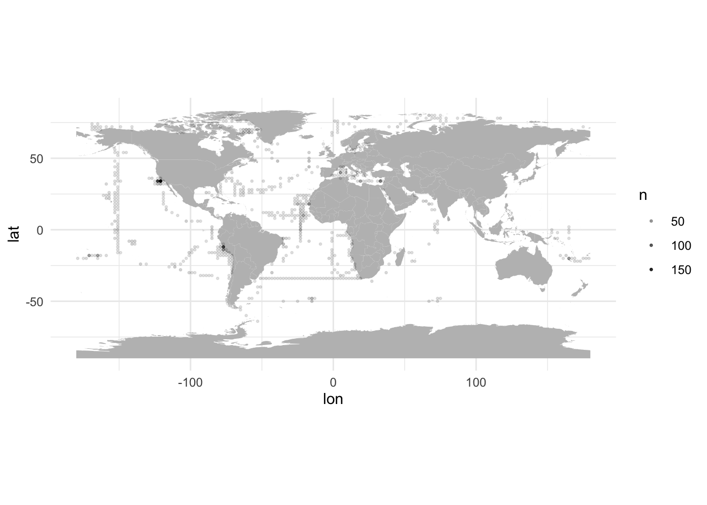
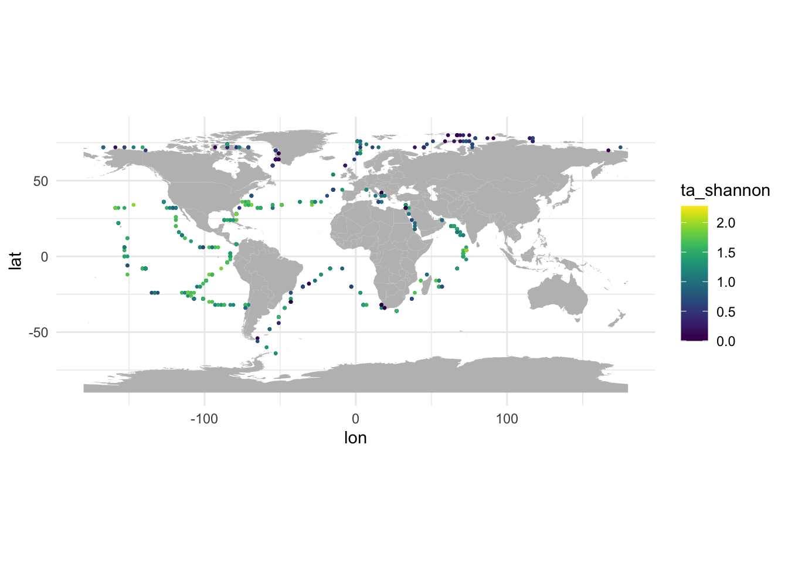
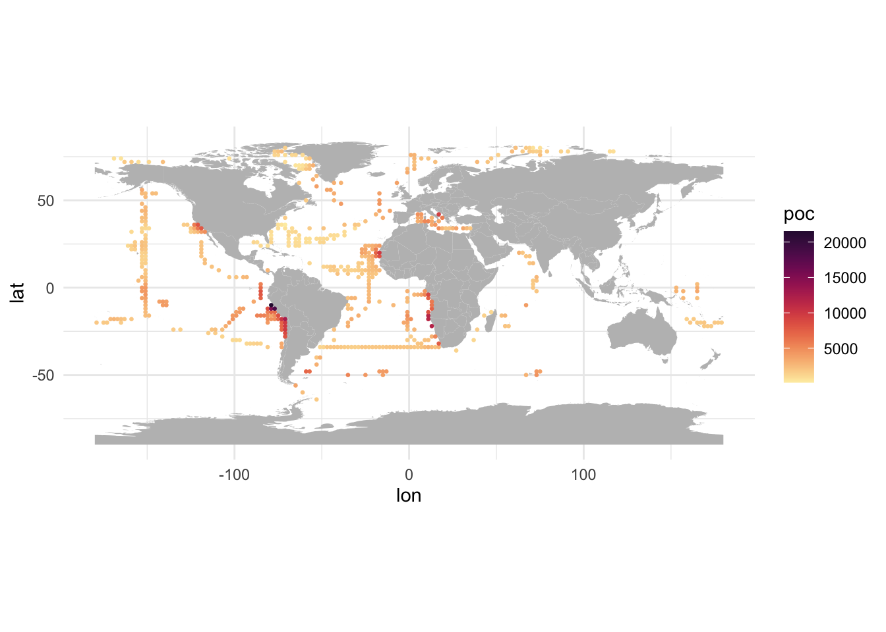

source("utils.R")
load("data/00.carbon_data.Rdata")
load("data/01.all_env.Rdata")
load("data/03.uvp_profiles.Rdata")
rm(coast)Assemble POC, environmental and UVP data
Load data
Round coordinates of env and UVP data to match carbon data
Carbon data is given on a 2°×2° grid, so we need to round env and UVP coordinates to match the same grid. Carbon longitudes are odd so we need to floor longitude with precision = 2 and then add 1 to the result. Carbon latitudes are even so we can just round with precision = 2.
Env data
env <- env %>%
arrange(lon, lat) %>%
mutate(
# floor longitude and add 1 because carbon longitudes are odd
lon = roundp(lon, precision = 2, f = floor) + 1,
# round latitude because carbon latitudes are even
lat = roundp(lat, precision = 2, f = round)
) %>%
# Average all values on carbon pixels
group_by(lon, lat) %>%
summarise_all(mean, na.rm = TRUE) %>%
ungroup()UVP data
We can start by plotting a map of UVP profiles.
profiles %>%
ggplot() +
geom_polygon(data = world, aes(x = lon, y = lat, group = group), fill = "gray") +
geom_point(aes(x = lon, y = lat), alpha = 0.5, size = 0.5) +
coord_quickmap()
Now let’s round the coordinates and replot the map. We also need to average UVP data on our new grid, but before that let’s also compute the number of UVP profiles per carbon pixel.
profiles <- profiles %>%
# Drop profile identification
select(-profile_id) %>%
mutate(
# floor longitude and add 1 because carbon longitudes are odd
lon = roundp(lon, precision = 2, f = floor) + 1,
# round latitude because carbon latitudes are even
lat = roundp(lat, precision = 2, f = round)
)
n_profiles <- profiles %>% count(lon, lat)
profiles <- profiles %>%
# Average all values on carbon pixels
group_by(lon, lat) %>%
summarise_all(mean, na.rm = TRUE) %>%
ungroup()
profiles %>%
ggplot() +
geom_polygon(data = world, aes(x = lon, y = lat, group = group), fill = "gray") +
geom_point(aes(x = lon, y = lat), alpha = 0.5, size = 0.5) +
coord_quickmap()
UVP profiles are now aligned on the 2°×2° grid. We can also plot the number of UVP profiles per pixel.
n_profiles %>%
ggplot() +
geom_polygon(data = world, aes(x = lon, y = lat, group = group), fill = "gray") +
geom_point(aes(x = lon, y = lat, alpha = n), size = 0.5) +
coord_quickmap()
We can notice a strong sampling in the California current and in the Peruvian upwelling.
Let’s have a quick look at Shannon diversity on this new grid.
ggmap(profiles, "ta_shannon", type = "point")
Assemble env, UVP and carbon data
Since all three datasets use the same round coordinates, we can join them together. As a result, we will only get env and carbon data where UVP data is available.
df <- profiles %>%
left_join(env, by = join_by(lon, lat)) %>%
left_join(df_c, by = join_by(lon, lat)) %>%
select(lon, lat, everything())Our dataset contains 581 points.
Now, we can plot POC data at locations of UVP profiles.
ggmap(df, "poc", type = "point") + scale_colour_cmocean(name = "matter") # manually add scale to show NA valuesScale for colour is already present.
Adding another scale for colour, which will replace the existing scale.Or temperature.
ggmap(df, "temperature_mean", type = "point") + scale_colour_cmocean(name = "thermal") # manually add scale to show NA valuesScale for colour is already present.
Adding another scale for colour, which will replace the existing scale.
In both cases, we notice that some POC and temperature data is not available at some UVP locations.
summary(df) lon lat datetime
Min. :-179.00 Min. :-64.00 Min. :2008-06-21 10:39:18.00
1st Qu.: -99.00 1st Qu.:-16.00 1st Qu.:2012-01-14 15:35:48.00
Median : -47.00 Median : 14.00 Median :2014-04-22 06:36:49.00
Mean : -46.59 Mean : 16.02 Mean :2013-12-16 20:58:53.99
3rd Qu.: 1.00 3rd Qu.: 40.00 3rd Qu.:2015-06-15 22:13:35.00
Max. : 179.00 Max. : 80.00 Max. :2018-07-22 12:45:04.00
ta_ric ta_shannon ta_pielou m_dim1_mean
Min. : 1.000 Min. :0.000 Min. :0.07554 Min. :-5.3106
1st Qu.: 5.000 1st Qu.:0.995 1st Qu.:0.59818 1st Qu.:-1.9043
Median : 7.500 Median :1.455 Median :0.71674 Median :-0.9396
Mean : 7.954 Mean :1.338 Mean :0.68812 Mean :-0.5989
3rd Qu.:10.714 3rd Qu.:1.687 3rd Qu.:0.83307 3rd Qu.: 0.4105
Max. :17.000 Max. :2.384 Max. :1.00000 Max. : 5.3862
NA's :2
m_dim1_var m_dim2_mean m_dim2_var m_dim3_mean
Min. : 1.551 Min. :-5.3897 Min. : 0.7853 Min. :-2.1010
1st Qu.: 9.683 1st Qu.:-0.2106 1st Qu.: 3.7749 1st Qu.:-0.1114
Median :12.458 Median : 0.4002 Median : 4.9466 Median : 0.4011
Mean :13.309 Mean : 0.6010 Mean : 5.7560 Mean : 0.4505
3rd Qu.:15.524 3rd Qu.: 1.7150 3rd Qu.: 6.2231 3rd Qu.: 0.9451
Max. :60.778 Max. : 5.2079 Max. :25.4429 Max. : 3.6427
m_dim3_var m_dim4_mean m_dim4_var temperature_mean
Min. : 0.6714 Min. :-3.2938 Min. : 0.5942 Min. :-1.317
1st Qu.: 3.8403 1st Qu.:-0.7851 1st Qu.: 3.6363 1st Qu.:15.449
Median : 5.3091 Median :-0.3051 Median : 4.6479 Median :21.177
Mean : 5.3494 Mean :-0.2462 Mean : 5.0642 Mean :18.513
3rd Qu.: 6.5724 3rd Qu.: 0.3643 3rd Qu.: 5.9559 3rd Qu.:26.237
Max. :12.9479 Max. : 2.2434 Max. :21.5038 Max. :29.883
NA's :24
salinity_mean silicate_mean phosphate_mean nitrate_mean
Min. :26.04 Min. : 0.4805 Min. :0.02884 Min. : 0.01941
1st Qu.:34.25 1st Qu.: 1.3269 1st Qu.:0.12524 1st Qu.: 0.16532
Median :35.31 Median : 2.1418 Median :0.26026 Median : 0.66237
Mean :34.84 Mean : 3.6139 Mean :0.37123 Mean : 2.14866
3rd Qu.:35.96 3rd Qu.: 3.8117 3rd Qu.:0.54854 3rd Qu.: 2.55441
Max. :39.82 Max. :77.1928 Max. :1.86037 Max. :27.52491
NA's :24 NA's :24 NA's :24 NA's :24
oxygen_mean pyc_mean mld_mean mld_argo_mean
Min. :178.9 Min. : 18.93 Min. : 15.00 Min. : 9.993
1st Qu.:207.9 1st Qu.: 53.13 1st Qu.: 16.47 1st Qu.: 29.652
Median :223.7 Median : 76.97 Median : 21.90 Median : 40.596
Mean :247.1 Mean : 79.11 Mean : 27.92 Mean : 43.124
3rd Qu.:256.7 3rd Qu.: 97.52 3rd Qu.: 32.19 3rd Qu.: 52.598
Max. :445.2 Max. :213.90 Max. :180.54 Max. :171.655
NA's :24 NA's :9 NA's :9 NA's :43
n_cline_mean p_cline_mean s_cline_mean z_eu_mean
Min. : 20.73 Min. : 20.43 Min. : 19.04 Min. : 20.52
1st Qu.: 86.57 1st Qu.: 83.57 1st Qu.:107.97 1st Qu.: 48.36
Median :137.94 Median :145.14 Median :178.38 Median : 64.58
Mean :168.99 Mean :172.52 Mean :212.18 Mean : 63.58
3rd Qu.:233.13 3rd Qu.:249.09 3rd Qu.:315.18 3rd Qu.: 76.76
Max. :440.06 Max. :444.68 Max. :458.63 Max. :113.67
NA's :9 NA's :9 NA's :9 NA's :8
par_mean temperature_sd salinity_sd silicate_sd
Min. : 9.851 Min. :0.1785 Min. :0.01431 Min. : 0.05983
1st Qu.:31.915 1st Qu.:1.1817 1st Qu.:0.05969 1st Qu.: 0.62750
Median :41.786 Median :1.8546 Median :0.09977 Median : 1.12645
Mean :37.728 Mean :1.8938 Mean :0.27775 Mean : 1.66675
3rd Qu.:45.585 3rd Qu.:2.3786 3rd Qu.:0.23418 3rd Qu.: 1.81084
Max. :53.212 Max. :5.9270 Max. :3.10761 Max. :11.32146
NA's :8 NA's :24 NA's :24 NA's :24
phosphate_sd nitrate_sd oxygen_sd pyc_sd
Min. :0.01762 Min. :0.01328 Min. : 1.621 Min. : 0.8547
1st Qu.:0.05314 1st Qu.:0.16952 1st Qu.: 5.784 1st Qu.: 12.5961
Median :0.08309 Median :0.69060 Median : 8.088 Median : 28.9944
Mean :0.11613 Mean :1.13833 Mean :10.035 Mean : 36.2932
3rd Qu.:0.17553 3rd Qu.:1.88998 3rd Qu.:12.573 3rd Qu.: 46.0551
Max. :0.38946 Max. :5.36035 Max. :52.614 Max. :191.3394
NA's :24 NA's :24 NA's :24 NA's :9
mld_sd mld_argo_sd n_cline_sd p_cline_sd
Min. : 0.000 Min. : 0.9067 Min. : 1.246 Min. : 0.6943
1st Qu.: 2.661 1st Qu.: 9.6106 1st Qu.: 20.859 1st Qu.: 20.6618
Median : 7.835 Median : 15.3336 Median : 44.855 Median : 49.2449
Mean : 14.374 Mean : 20.2456 Mean : 48.821 Mean : 54.1109
3rd Qu.: 20.056 3rd Qu.: 25.7978 3rd Qu.: 68.704 3rd Qu.: 83.7688
Max. :164.617 Max. :207.0769 Max. :168.907 Max. :170.3915
NA's :9 NA's :47 NA's :9 NA's :9
s_cline_sd z_eu_sd par_sd poc
Min. : 1.507 Min. : 0.5984 Min. : 1.528 Min. : 0.0656
1st Qu.: 30.119 1st Qu.: 3.7790 1st Qu.: 7.230 1st Qu.: 34.5265
Median : 54.695 Median : 5.8716 Median :12.195 Median : 67.0653
Mean : 60.471 Mean : 6.5006 Mean :11.192 Mean :131.9038
3rd Qu.: 89.511 3rd Qu.: 8.9040 3rd Qu.:14.849 3rd Qu.:203.5440
Max. :181.270 Max. :17.0907 Max. :21.488 Max. :785.5005
NA's :9 NA's :8 NA's :8 NA's :49 Let’s get rid of these points.
df <- df %>% drop_na()We still have 508 points in our dataset.
Let’s redraw our POC map.
ggmap(df, "poc", type = "point")
Subsample env variables
For now, just keep mean variables and ignore sd and var variables.
#df <- df %>% select(-c(profile_id, lon, lat, datetime))
#df <- df %>% select(lon, lat, poc, contains("ta_"), contains("mean"))Save the resulting dataset
save(df, file = file.path(data_dir, "04.all_data.Rdata"))